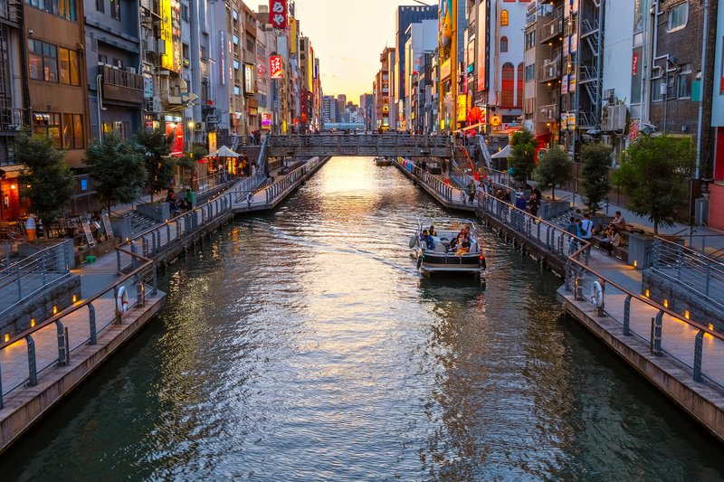
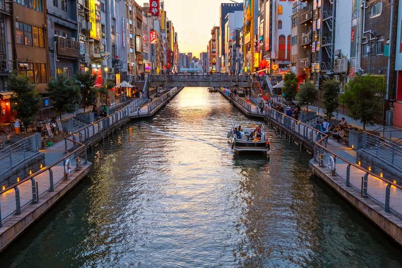

Osaka es una gran ciudad portuaria y un centro comercial en la isla de Honshu de Japón. Es famosa por su moderna arquitectura, su vida nocturna y la abundante comida callejera. El castillo de Osaka del shogunato del siglo XVI, que ha sido restaurado varias veces, es un importante monumento histórico. Está rodeado de un foso y un parque con árboles de ciruelo, durazno y cerezo en flor. Sumiyoshi-taisha se encuentra entre los templos shinto más antiguos de Japón.
Osaka |
Lunes | Martes | Miercoles | Jueves | Viernes | Sábado | Domingo |
|---|---|---|---|---|---|---|---|
| Shibuya | Sin reunión | Sin reunión | 10:30 | Sin reunión | Sin reunión | Sin reunión | Sin reunión |
| Ueno | Sin reunión | 08:00 | Sin reunión | 15:00 | Sin reunión | Sin reunión | Sin reunión |
| Ikebokuro | 15:00 | Sin reunión | Sin reunión | Sin reunión | 08:00 | 14:30 | Sin reunión |
| Nakano | 21:30 | Sin reunión | Sin reunión | 15:00 | Sin reunión | Sin reunión | 08:00 |